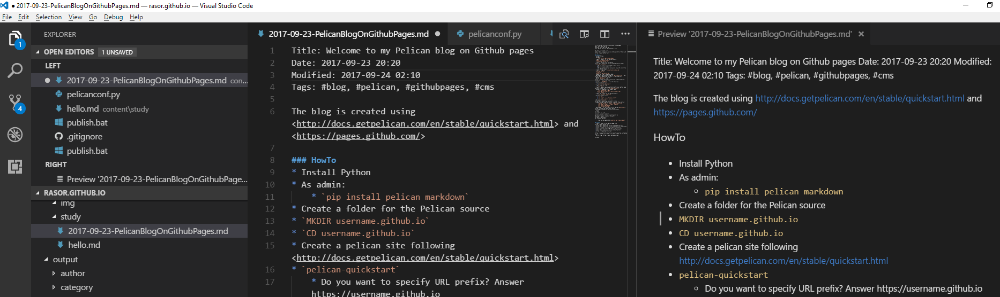

Using Pelican blog on Github pages
Posted on september 23, 2017 in DevOp Updated: oktober 03, 2017
This blog is part of a serie
I had some reasons for moving a blog from Wordpress to GitHubPages. You can read about reason, pro and cons here
In this blog I setup a Pelican blog site from Windows and host it on GitHub Pages.
HowTo
Installation - Prerequisites
- Install Python
- Create an account at https://github.com
- On Windows: Install Git for Windows
Installation - Pelican
- As admin:
pip install pelican markdown
- Create a folder for the Pelican source
MD username.github.ioCD username.github.io
- Create a pelican site following http://docs.getpelican.com/en/stable/quickstart.html
pelican-quickstart- Do you want to specify URL prefix? Answer https://username.github.io
- Do you want to upload using xxx? Answer N untill the xxx = GitHub Pages
Create some content
- Create a blog e.g
~/content/yourcategoryno1/myfirstblog.md - Preview content
pelican contentcd outputpython -m pelican.server- Browse to http://localhost:8000/
- On Windows - in root create a file called serve.bat with the content:
pelican content
cd output
start "" "http://localhost:8000/"
python -m pelican.server
REM Ctrl-C to quit
- ... then you can pre-view your content with
.\serve - Images
- In
pelicanconf.pyadd lineSTATIC_PATHS = ['img', 'pdf'] - Create an image e.g
~/content/img/hello.png - Link to the file with

- In
- Links
- External:
[link desc](https://blog.getpelican.com/){:target="_blank"} - Internal:
[link desc]({filename}/yourcategoryno1/myfirstblog.md){:target="_blank"}
- External:
- Optionally edit more settings in
pelicanconf.py- see http://docs.getpelican.com/en/3.7.1/settings.html - add a
favicon.icoto root
Prepare GIT as VersionControlSystem
- Fetch
.gitignorefrom https://github.com/getpelican/pelican-blog/blob/master/.gitignore - save it to root - Create a
~/README.md- just for the source branch - Install publish tool
pip install ghp-import
- Create local git repo
git init
- Create a remote repo via github.com for your github page build in GitHub. Call it
username.github.io - Connect to repo and print remote repo
git remote add origin https://github.com/username/username.github.io.gitgit remote -v
- Create new branch for the pelican source
git checkout -b pelican
Deploy you blog
- (Foreach) Commit source
git add .git commit -a -m "Initial commit"git push -u origin pelican
- (Foreach) Publish build to master then publish
pelican content -o output -s pelicanconf.pyghp-import output -r origin -b mastergit push origin mastergit checkout pelican
- On Windows - in root create a file called publish.bat with the content:
git add .
git commit -a -m %1
git push -u origin pelican
pelican content -o output -s pelicanconf.py
ghp-import output -r origin -b master
git push origin master
git checkout pelican
- ... then you can publish by
.\publish "some comment"
Editor
I'm using Visual Studio Code, that has a nice Markdown preview - probably a plugin. But you could use NotePad for that matter.

Day to day Workflow
- Open VS Code
- Open VS Code terminal 1 - T1
.\serve#code- A browser opens and navigates to http://localhost:8000
- Add a new
.mdfile in \content\ and add some content - Open VS Code terminal 2 - T2
- Browse to https://username.github.io
Tip: If I don't want to publish a file I rename it to .txt - then it won't be visible before I rename it back to .md
Continue in Using Pelican Themes
Links
GitHub pages
Pelican
- http://docs.getpelican.com/en/stable/publish.html
- http://docs.getpelican.com/en/3.6.3/content.html#linking-to-static-files
- http://docs.getpelican.com/en/stable/faq.html
- https://blog.getpelican.com/
- https://help.github.com/articles/about-supported-custom-domains/
- Another install Pelican blog
- Pelican tutorial for deployment
- Pelican on Twitter
Markdown
- https://github.com/tchapi/markdown-cheatsheet
- [Syntax highlighting languages]http://tinker.kotaweaver.com/blog/?p=152
- http://pythonhosted.org/Markdown/reference.html
Other
The End